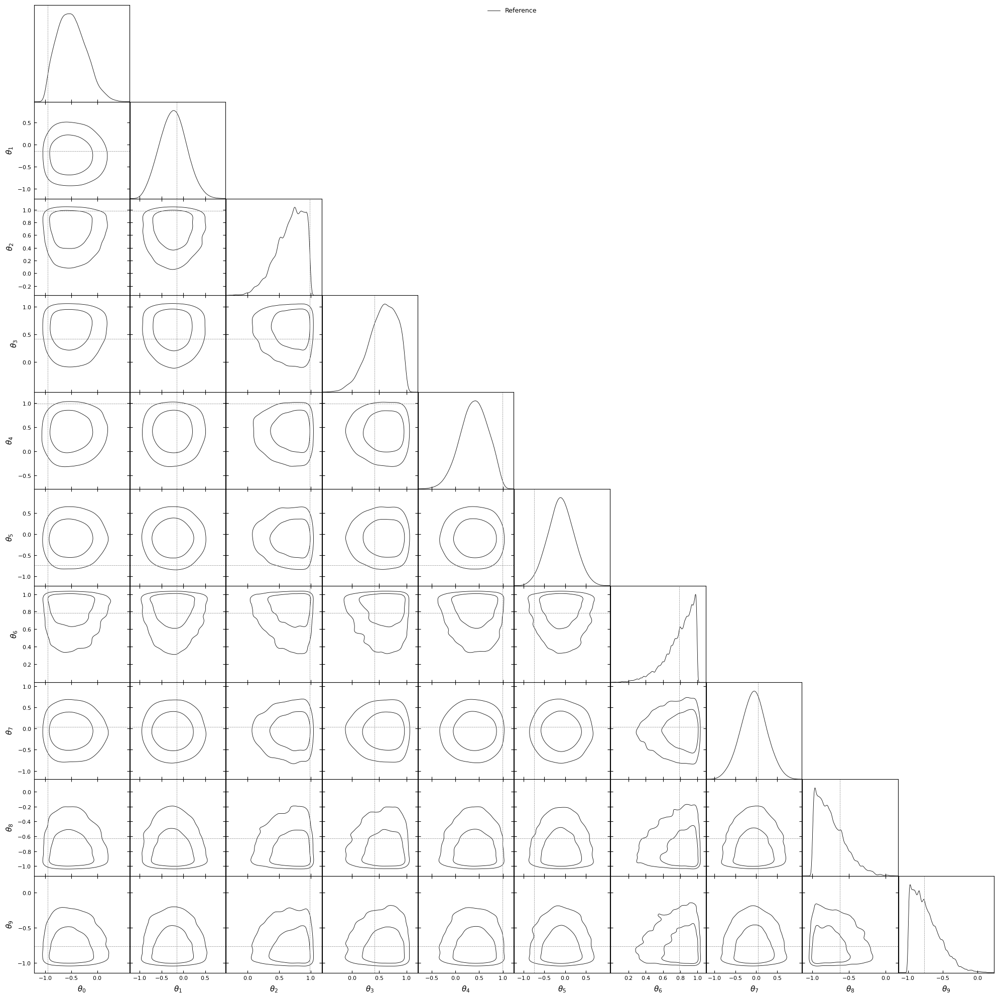
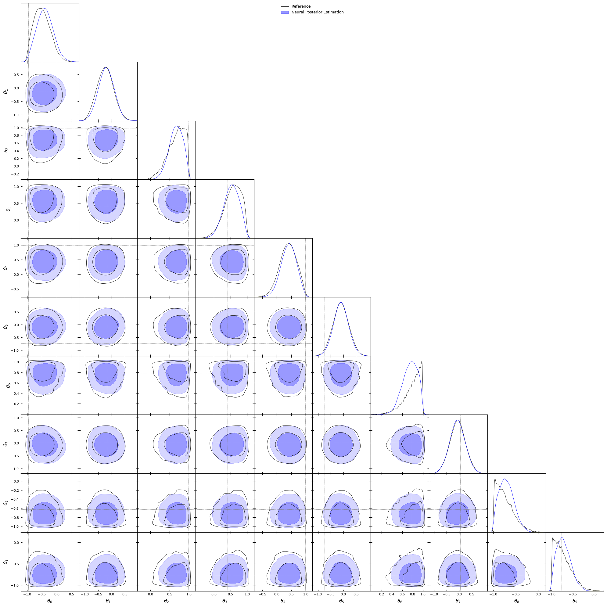
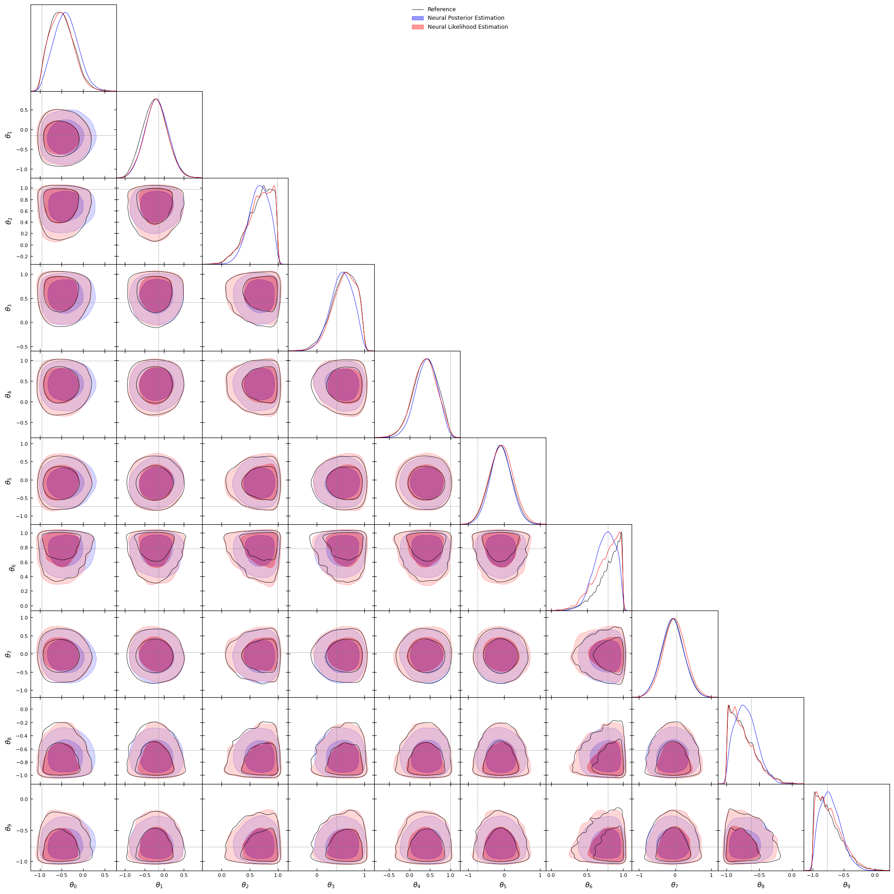
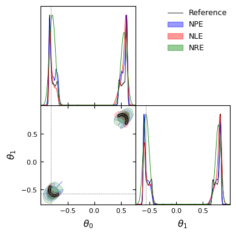
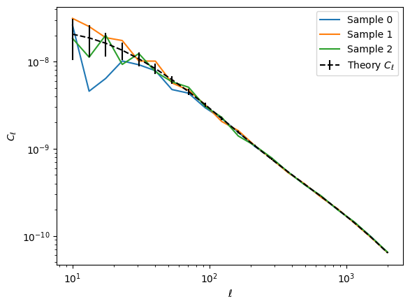
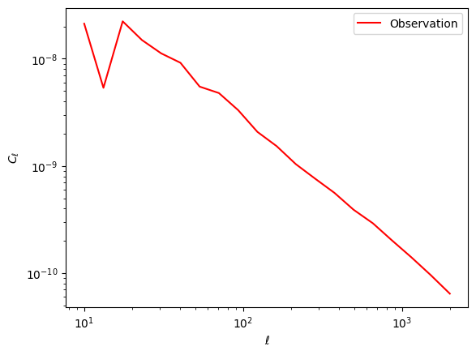

import numpy as np
import scipy.stats as stats
import matplotlib.pyplot as plt
from tqdm import tqdm
import torch
try:
import sbi
except:
%pip install sbi -q
%pip install notebook==6.5.5
from sbi.inference import NPE, SNLE, NRE
from sbi.inference.posteriors import MCMCPosterior
from sbi.inference.potentials import likelihood_estimator_based_potential
from sbi.utils import BoxUniform
try:
import sbibm
except:
%pip install sbibm -q
import sbibm
try:
from getdist import MCSamples, plots
except:
%pip install getdist -q
from getdist import MCSamples, plots
%matplotlib inlineImplicit Likelihood Inference - 1 mois 1 labo (version en français)
Author: Sacha Guerrini (sacha.guerrini@cea.fr)
Credit image: Siddharth Mishra-Sharma (smsharma@mit.edu)


device = torch.device('cuda' if torch.cuda.is_available() else 'cpu')
print(f"Running on {'GPU' if device.type=='cuda' else 'CPU'}")Running on GPU1. Introduction théorique à l’inférence avec vraisemblance implicite
L’inférence des paramètres \(\theta\) à partir de certaines données est omniprésente dans différents domaines scientifiques (par exemple, l’astrophysique, l’épidémiologie, etc.). Dans ces problèmes, l’objectif n’est pas seulement d’estimer les paramètres, mais aussi de propager l’incertitude des données vers les paramètres. Une manière de penser à ces problèmes est en termes de distribution. Les statistiques bayésiennes reposent sur le théorème de Bayes :
\[ p(\theta| x) \propto p(x|\theta)p(\theta) \]
où : - \(p(x|\theta)\) est la fonction de vraisemblance. Elle correspond à la distribution des points de données \(x\) étant donné certains paramètres \(\theta\). - \(p(\theta)\) est la distribution a priori des paramètres \(\theta\). Elle contient des contraintes sur les valeurs possibles des paramètres \(\theta\) et peut également encapsuler des connaissances sur ces derniers. - \(p(\theta|x)\) est la distribution a posteriori des paramètres \(\theta\) étant donné certaines données \(x\). L’objectif de notre problème d’inférence est d’estimer avec précision cette distribution.
La figure ci-dessous résume ces concepts :

1.1 Inférence en cosmologie
En cosmologie, les paramètres cosmologiques sont contraints en estimant les distributions a posteriori des paramètres cosmologiques à partir de certaines données. En cosmologie, les données sont liées à un signal qui est relié à une sonde cosmologique. Par exemple, la distribution de la masse dans l’univers dévie la lumière de manière cohérente. On appelle cet effet lentille gravitationnelle faible. Les corrélations dans la forme des galaxies contiennent des informations sur les grandes structures sous-jacentes non observées (filaments, vides et amas de galaxies). Ces corrélations peuvent donc être modélisées et utilisées pour contraindre les paramètres cosmologiques.
1.2 Inférence 101
L’approche classique pour effectuer une inférence consiste à supposer une forme fermée pour la vraisemblance. Diverses formes peuvent être envisagées selon le problème à résoudre. Une hypothèse standard en cosmologie est d’utiliser une vraisemblance gaussienne. Cette hypothèse est motivée par le principe ergodique qui s’applique en cosmologie grâce au principe cosmologique, selon lequel des régions du ciel séparées par de grandes échelles échantillonnent des réalisations indépendantes de nos statistiques/résumés \(x\). En moyenne, un grand nombre d’échantillons indépendants et identiquement distribués donne une distribution gaussienne selon le théorème central limite (TCL). Une vraisemblance gaussienne s’écrit :
\[ \log p(x|\theta) \propto (x_{\rm obs}-x_{\rm model}(\theta))^T \Sigma^{-1}(\theta)(x_{\rm obs}-x_{\rm model}(\theta)) \]
où \(x_{\rm model}(\theta)\) est la prédiction du modèle pour les paramètres \(\theta\) donnés et \(\Sigma(\theta)\) est la matrice de covariance du vecteur de données. Il est possible d’échantillonner la distribution a posteriori \(p(\theta|x)\) à l’aide d’algorithmes de Monte Carlo par chaînes de Markov (MCMC) (voir par exemple cet article pour une revue et cette démonstration pour une démonstration).
Cette méthode a été, et reste, largement utilisée en cosmologie. Cependant, elle présente certaines limites face aux défis que poseront les futures enquêtes de Stage-IV comme Euclid ou LSST.
Limitations pour l’analyse cosmologique
Les algorithmes MCMC sont principalement séquentiels. La quantité et la qualité des données des enquêtes de Stage-IV augmentent le temps de calcul nécessaire pour estimer le modèle \(x_{\rm model}\) pour des paramètres \(\theta\) donnés. De plus, la dimensionnalité de l’espace des paramètres à échantillonner augmente, car certains effets ne peuvent pas être négligés. En raison de la malédiction de la dimensionnalité, les chaînes MCMC mettent plus de temps à converger. En résumé, estimer les paramètres en utilisant la méthodologie standard peut prendre jusqu’à une semaine.
L’hypothèse de vraisemblance gaussienne repose sur le principe ergodique qui s’applique mal à certaines échelles (petites et grandes). Il est toujours possible de tester la gaussianité de la vraisemblance à ces échelles, mais il n’est pas évident de savoir comment y remédier. De plus, la communauté s’intéresse de plus en plus aux statistiques d’ordre supérieur, qui capturent des informations non gaussiennes des sondes cosmologiques. Cependant, on connaît peu de choses sur la vraisemblance de ces statistiques, et il n’est parfois pas possible de les modéliser à partir de principes théoriques.
Pour ces raisons, la communauté s’est intéressée à de nouvelles méthodes d’inférence utilisant l’intelligence artificielle. Ces méthodes sont généralement appelées inférence sans vraisemblance (Likelihood-Free Inference), inférence basée sur la simulation (Simulation-Based Inference) ou inférence avec vraisemblance implicite (Implicit Likelihood Inference).
1.3 Inférence avec vraisemblance implicite
Avertissement : Il existe des différences subtiles et techniques entre ce que l’on appelle inférence basée sur la simulation et inférence avec vraisemblance explicite/implicite. Pour simplifier et clarifier, je supposerai ici qu’elles se rapportent à la même chose, mais j’encourage les lecteurs intéressés à consulter la littérature pour mieux comprendre les différences entre ces terminologies.
L’inférence avec vraisemblance implicite (ILI) est un changement de paradigme utilisant à la fois des modèles génératifs et des modèles directs pour effectuer l’inférence. Voici la situation. Dans notre boîte à outils, nous savons créer des simulations réalistes de l’objet que nous essayons de mesurer. En cosmologie, nous nous appuyons en effet sur des simulations N-body pour reproduire le champ de surdensité (grandes structures) et nous savons (jusqu’à un certain niveau de précision) utiliser ce champ de surdensité pour reproduire des observations cosmologiques qui “ressemblent” à nos données réelles. Cependant, cet outil n’est pas utilisé dans l’Inférence 101, sauf à des fins de validation. L’idée est de remplacer la modélisation théorique des données que nous observons \(x_{\rm model}(\theta)\) par une simulation (stochastique) qui permet d’échantillonner la vraisemblance \(\tilde{x} \sim p(x|\theta)\). Estimer la distribution a posteriori \(p(\theta|x)\) pourrait ainsi se formuler comme suit :
Quel est l’ensemble de paramètres \(\theta\) qui produit, en utilisant le simulateur, des observations factices qui “ressemblent” à mes observations réelles ?
Dans l’Inférence 101, la vraisemblance était explicitement spécifiée avec une forme analytique. Maintenant, le simulateur stochastique nous permet d’échantillonner une vraisemblance qui devient implicite, d’où son nom. En principe, des effets arbitrairement complexes peuvent être pris en compte dans le modèle direct sans se soucier de savoir si nous savons les modéliser théoriquement. Néanmoins, cette méthodologie repose sur une forte hypothèse : le simulateur produit des observations suffisamment réalistes.

À ce stade, nous avons une vraisemblance implicite \(p(x|\theta)\) à partir de laquelle nous pouvons échantillonner, mais elle est intraitable. C’est là que les modèles génératifs utilisant l’intelligence artificielle (IA) sont des outils puissants. Les modèles génératifs sont des modèles dont la cible est des distributions. Les normalizing flows (NF) sont des modèles génératifs basés sur des réseaux neuronaux qui agissent comme une série de transformations bijectives d’une distribution simple (par exemple, une gaussienne unitaire) vers une distribution complexe.

Les NF sont entraînés en minimisant la divergence de Kullback-Leibler (KL) entre une distribution cible \(p(x)\) et la distribution \(q_{\varphi}(x)\) émulée par le NF, où \(\varphi\) représente les poids du réseau neuronal.
\[ D_{\rm KL}(p(x)|q_{\varphi}(x)) = \int p(x)\log\left( \frac{p(x)}{q_{\varphi}(x)}\right)dx \]
En effet, la divergence KL est nulle pour deux distributions identiques et positive sinon. Elle peut être décomposée en un terme d’entropie de la distribution \(p(x)\), \(\mathbb{H}(p)\), et un terme qui dépend des poids \(\varphi\). Minimiser la divergence KL revient donc à minimiser la probabilité logarithmique négative :
\[ \mathcal{L}(\varphi) = \mathbb{E}_{p(x)}\left[ -\log(q_{\varphi}(x))\right] \]
Avec cette dernière perte, la seule exigence est de pouvoir échantillonner à partir de la distribution cible. C’est excellent, car c’est exactement ce que nous avons avec notre simulateur !
1.4 Résumé
En résumé, voici les étapes pour effectuer une inférence avec vraisemblance implicite :
- Choisissez une distribution a priori pour vos paramètres \(p(\theta)\).
- Construisez un simulateur pour échantillonner des observations réalistes \(p(x|\theta)\).
- Créez un ensemble de données composé de paires \((\theta, x)\).
- Utilisez cet ensemble de données pour entraîner un normalizing flow afin d’émuler une distribution cible (voir section suivante).
- Échantillonnez la distribution a posteriori \(p(\theta|x)\).
Voici une compilation des avantages et des inconvénients de l’inférence avec vraisemblance implicite (ILI) :
| Avantages | Inconvénients |
|---|---|
| Rapide à exécuter sur GPU | Les normalizing flows sont des boîtes noires |
| Pas d’hypothèse sur la forme de la vraisemblance | Très sensible aux erreurs de spécification |
| Ne modélisez pas vos systématiques ; simulez-les ! |
2. Premier example: Vraisemblance gaussienne linéaire
Lueckmann et al. ont réalisé un benchmark de l’inférence avec vraisemblance implicite (ILI) sur divers problèmes. Nous utiliserons la bibliothèque sbibm qui permet d’utiliser le même simulateur que celui de leur benchmark. De nombreuses tâches sont disponibles :
sbibm.get_available_tasks()['slcp',
'gaussian_linear_uniform',
'sir',
'bernoulli_glm',
'two_moons',
'lotka_volterra',
'gaussian_linear',
'gaussian_mixture',
'slcp_distractors',
'bernoulli_glm_raw']Nous allons d’abord explorer un exemple simple : gaussian_linear_uniform :
- Prior : \(\mathcal{U}(-1, 1)\)
- Simulateur : \(x|\theta \sim \mathcal{N}(x|m_{\theta}=\theta, \Sigma=0.1 \odot I)\)
- \(\theta \in \mathbb{R}^{10}, x \in \mathbb{R}^{10}\)
#Let's first load the task
task = sbibm.get_task('gaussian_linear_uniform')
prior = task.get_prior() #Returns an object that allows to sample from the prior
simulator = task.get_simulator() #Returns the simulator function
reference_samples = task.get_reference_posterior_samples(num_observation=1) #Returns the reference samples
observation = task.get_observation(num_observation=1) #Returns the observation
truth = task.get_true_parameters(num_observation=1).flatten() #Returns the true parameters
dim_theta = truth.shape[0]
dim_obs = observation.shape[1]
print(f"Dimension of theta: {dim_theta}")
print(f"Dimension of observation: {dim_obs}")
print(f"True parameters: {truth}")Dimension of theta: 10
Dimension of observation: 10
True parameters: tensor([-0.9527, -0.1482, 0.9824, 0.4132, 0.9904, -0.7402, 0.7862, 0.0438,
-0.6262, -0.7651])#Let's have a look at the target, we will plot
#distributions using getdist
labels = [rf'\theta_{i}' for i in range(10)]
reference_samples_gd = MCSamples(samples=reference_samples.numpy(), names=labels,
labels=labels)
g = plots.get_subplot_plotter()
g.settings.figure_legend_frame = False
g.settings.alpha_filled_add = 0.4
g.triangle_plot([reference_samples_gd],
filled=[False],
legend_labels=["Reference"],
line_args=[
{'color': 'black'},
],
contour_colors=['black'],
markers={
label: val for label, val in zip(labels, truth)
}
)
plt.show()Removed no burn in
To train our NFs, we first need a training set drawn from the simulator.
train_set_size = 10_000
theta_train = prior(num_samples=train_set_size)
x_train = simulator(theta_train)2.1 Estimation Neuronale de la Distribution Postérieure (NPE)
Estimation Neuronale de la Distribution Postérieure (NPE) est une première approche d’inférence avec vraisemblance implicite où les échantillons \((\theta, x) \sim p(\theta, x)\) sont utilisés pour estimer directement la distribution postérieure. La densité cible du normalizing flow est la distribution \(p(\theta|x)\). Contrairement à ce qui a été introduit dans la première partie, la distribution est conditionnée sur les données observées \(x\). Le NF apprend donc une correspondance entre les observations et l’espace des distributions dans l’espace des paramètres :
\[ q_{\varphi} : x \longrightarrow p(\theta|x) \]

Avec NPE, la distribution postérieure est directement apprise, ce qui permet d’échantillonner à partir de celle-ci et de calculer la log-probabilité de n’importe quel paramètre \(\tilde{\theta}\). La distribution a priori utilisée est celle qui a servi à créer l’ensemble d’entraînement. Cela peut poser problème en pratique, car l’inférence peut parfois être dominée par l’a priori. Avec des simulations coûteuses, NPE ne permet pas de tester efficacement les effets de l’a priori.
Voyons comment cela fonctionne en pratique. Dans ce notebook, nous utilisons la bibliothèque standard sbi basée sur torch pour implémenter et entraîner les réseaux neuronaux. (Voir la documentation ici)
#Let's first create a prior object
prior_sbi = BoxUniform(low=-torch.ones(10), high=torch.ones(10), device=device)#We then create an object to perform NPE
#In torch, if you want to use the GPU, you have to specify
#the device on which the data will be stored
inference = NPE(prior=prior_sbi, device=device)
#Add the simulations to the object
theta_train = theta_train.to(device)
x_train = x_train.to(device)
inference = inference.append_simulations(theta=theta_train, x=x_train)/usr/local/lib/python3.10/dist-packages/sbi/inference/trainers/npe/npe_base.py:157: UserWarning: Data x has device 'cuda:0'. Moving x to the data_device 'cuda'. Training will proceed on device 'cuda'.
/usr/local/lib/python3.10/dist-packages/sbi/inference/trainers/npe/npe_base.py:157: UserWarning: Parameters theta has device 'cuda:0'. Moving theta to the data_device 'cuda'. Training will proceed on device 'cuda'.#Train!!!
density_estimator = inference.train() Neural network successfully converged after 140 epochs.#You can then recover the posterior distribution
posterior = inference.build_posterior()
print(posterior)Posterior p(θ|x) of type DirectPosterior. It samples the posterior network and rejects samples that
lie outside of the prior bounds.La distribution postérieure apprise est dite amortie car elle renvoie une distribution postérieure pour toute observation \(x\) fournie. Essayons d’utiliser l’observation fournie par sbibm et vérifions si nous récupérons la distribution correcte.
npe_samples = posterior.sample((10_000,), x=observation.to(device))npe_samples = npe_samples.cpu().numpy()npe_samples_gd = MCSamples(samples=npe_samples, names=labels, labels=labels)
g = plots.get_subplot_plotter()
g.settings.figure_legend_frame = False
g.settings.alpha_filled_add = 0.4
g.triangle_plot([reference_samples_gd, npe_samples_gd],
filled=[False, True],
legend_labels=["Reference", "Neural Posterior Estimation"],
line_args=[
{'color': 'black'},
{'color': 'blue'}
],
contour_colors=['black', 'blue'],
markers={
label: val for label, val in zip(labels, truth)
}
)
plt.show()Removed no burn in
Le résultat est très satisfaisant!
2.2 Estimation Neuronale de la Vraisemblance (NLE)
Une autre approche consiste à apprendre la vraisemblance \(p(x|\theta)\) plutôt que la distribution postérieure \(p(\theta|x)\). Cette approche est appelée Estimation Neuronale de la Vraisemblance (NLE). Techniquement, elle est complètement similaire à NPE, mais les variables échantillonnées et conditionnées sont inversées. Cependant, elle présente quelques différences importantes :
- NLE nécessite une étape d’échantillonnage supplémentaire utilisant, par exemple, MCMC.
- L’a priori utilisé pour l’étape d’échantillonnage peut être différent de l’a priori utilisé pour générer l’ensemble d’entraînement. L’utilisateur peut ainsi vérifier s’il y a des effets de volume.
- La log-probabilité de la distribution postérieure \(p(\theta|x)\) ne peut pas être calculée directement.
- Pour certaines statistiques résumées, la taille du vecteur de données peut être très grande. La distribution cible devient alors intraitable pour les normalizing flows, et il est courant d’utiliser des méthodes de compression (que nous ne décrirons pas dans ce notebook) pour gérer les statistiques résumées de grande dimension.
Cette approche est particulièrement intéressante en cosmologie car elle permet de vérifier si la vraisemblance est Gaussienne ou non (voir par exemple von Wietersheim-Kramsta et al.) et offre une comparaison plus proche d’une comparaison “équivalente” avec la méthodologie standard pour effectuer une inférence.
Implémentons-la !
#As previously, let's create an SNLE object
inference_nle = SNLE(prior=prior_sbi, device=device)#Let's add our training set
inference_nle = inference_nle.append_simulations(theta=theta_train, x=x_train)/usr/local/lib/python3.10/dist-packages/sbi/inference/trainers/base.py:278: UserWarning: Data x has device 'cuda:0'. Moving x to the data_device 'cuda'. Training will proceed on device 'cuda'.
/usr/local/lib/python3.10/dist-packages/sbi/inference/trainers/base.py:278: UserWarning: Parameters theta has device 'cuda:0'. Moving theta to the data_device 'cuda'. Training will proceed on device 'cuda'.#Train!!!
density_estimator_nle = inference_nle.train() Neural network successfully converged after 69 epochs.#We then create an MCMC posterior to sample from the posterior
posterior_nle = inference_nle.build_posterior(
mcmc_method="slice_np_vectorized",
mcmc_parameters={"num_chains": 20,
"thin": 1}
)
print(posterior_nle)Posterior p(θ|x) of type MCMCPosterior. It provides MCMC to .sample() from the posterior and can evaluate the _unnormalized_ posterior density with .log_prob().#Sample and grab a coffee this can take a while
nle_samples = posterior_nle.sample((5_000,), x=observation.to(device))nle_samples = nle_samples.cpu().numpy()Notez que la vraisemblance est différentiable, ce qui permet d’utiliser des méthodes d’échantillonnage plus avancées s’appuyant sur le gradient de la vraisemblance, comme HMC ou NUTS.
Comparons NPE et NLE avec des échantillons de référence !
nle_samples_gd = MCSamples(samples=nle_samples, names=labels, labels=labels)
g = plots.get_subplot_plotter()
g.settings.figure_legend_frame = False
g.settings.alpha_filled_add = 0.4
g.triangle_plot([reference_samples_gd, npe_samples_gd, nle_samples_gd],
filled=[False, True],
legend_labels=["Reference", "Neural Posterior Estimation", "Neural Likelihood Estimation"],
line_args=[
{'color': 'black'},
{'color': 'blue'},
{'color': 'red'}
],
contour_colors=['black', 'blue', 'red'],
markers={
label: val for label, val in zip(labels, truth)
}
)
plt.show()Removed no burn in
Le résultat est à nouveau très satisfaisant!
2.3 Estimation du Ratio Neuronale (NRE)
Une dernière approche consiste à estimer le ratio \(p(x|\theta)/p(x)\), qui contient l’information nécessaire pour échantillonner à partir de la distribution postérieure en utilisant MCMC. En effet, la probabilité de transition du paramètre actuel \(\theta_t\) vers un paramètre proposé \(\tilde{\theta}\) dépend du ratio de la postérieure :
\[ \frac{p(\tilde{\theta}|x)}{p(\theta_t|x)}= \frac{p(\tilde{\theta})p(x|\tilde{\theta})}{p(\theta_t)p(x|\theta_t)} \]
Le ratio peut être estimé en entraînant un classificateur pour reconnaître les échantillons qui ne proviennent pas de la distribution jointe \(p(x, \theta)\). Il peut être démontré que ce ratio correspond aux logits du classificateur.

Implémentons cela!
# Create an inference object
inference_nre = NRE(prior=prior_sbi, device=device)#Let's add our training set
inference_nre = inference_nre.append_simulations(theta=theta_train, x=x_train)/usr/local/lib/python3.10/dist-packages/sbi/inference/trainers/base.py:278: UserWarning: Data x has device 'cuda:0'. Moving x to the data_device 'cuda'. Training will proceed on device 'cuda'.
/usr/local/lib/python3.10/dist-packages/sbi/inference/trainers/base.py:278: UserWarning: Parameters theta has device 'cuda:0'. Moving theta to the data_device 'cuda'. Training will proceed on device 'cuda'.#Train!!! Note that it is way faster. Classifiers are not as heavy as NFs
density_estimator_nre = inference_nre.train() Neural network successfully converged after 52 epochs.#Create an MCMC posterior
posterior_nre = inference_nre.build_posterior(
mcmc_method="slice_np_vectorized",
mcmc_parameters={"num_chains": 20,
"thin": 1}
)
print(posterior_nre)Posterior p(θ|x) of type MCMCPosterior. It provides MCMC to .sample() from the posterior and can evaluate the _unnormalized_ posterior density with .log_prob().#Let's gather samples
nre_samples = posterior_nre.sample((5_000,), x=observation.to(device))#and compare
nre_samples_gd = MCSamples(samples=nre_samples.cpu().numpy(), names=labels, labels=labels)
g = plots.get_subplot_plotter()
g.settings.figure_legend_frame = False
g.settings.alpha_filled_add = 0.4
g.triangle_plot([reference_samples_gd, npe_samples_gd, nle_samples_gd, nre_samples_gd],
filled=[False, True],
legend_labels=["Reference", "Neural Posterior Estimation", "Neural Likelihood Estimation", "Neural Ratio Estimation"],
line_args=[
{'color': 'black'},
{'color': 'blue'},
{'color': 'red'},
{'color': 'green'}
],
contour_colors=['black', 'blue', 'red', 'green'],
markers={
label: val for label, val in zip(labels, truth)
}
)
plt.show()Removed no burn in
Ici, la distribution cible est une Gaussienne, donc elle est très simple. Essayons maintenant d’appliquer cette méthodologie à une distribution plus complexe provenant de sbibm.
3. Deuxième example: two moons
- Prior: \(\mathcal{U}(-1, 1)\)
- Simulateur: \(x|\theta \sim \left[\begin{array}{c} r\cos(\alpha)+0.25 \\ r\sin(\alpha)\end{array}\right]+\left[ \begin{array}{c} -|\theta_1+\theta_2|/\sqrt{2}\\ (-\theta_1+\theta_2)/\sqrt{2} \end{array}\right]\) where \(\alpha \sim \mathcal{U}(-\pi/2, \pi/2)\) and \(r \sim \mathcal{N}(0.1, 0.01^2)\)
- \(\theta \in \mathbb{R}^2\), \(x\in \mathbb{R}^2\)
#Let's fetch the task from sbibm
task = sbibm.get_task('two_moons')
prior = task.get_prior() #Returns an object that allows to sample from the prior
simulator = task.get_simulator() #Returns the simulator function
reference_samples = task.get_reference_posterior_samples(num_observation=1) #Returns the reference samples
observation = task.get_observation(num_observation=1) #Returns the observation
truth = task.get_true_parameters(num_observation=1).flatten() #Returns the true parameters
dim_theta = truth.shape[0]
dim_obs = observation.shape[1]
print(f"Dimension of theta: {dim_theta}")
print(f"Dimension of observation: {dim_obs}")
print(f"True parameters: {truth}")Dimension of theta: 2
Dimension of observation: 2
True parameters: tensor([-0.8177, -0.5757])#Let's have a look at the target, we will plot
#distributions using getdist
labels = [rf'\theta_{i}' for i in range(dim_theta)]
reference_samples_gd = MCSamples(samples=reference_samples.numpy(), names=labels,
labels=labels)
g = plots.get_subplot_plotter()
g.settings.figure_legend_frame = False
g.settings.alpha_filled_add = 0.4
g.triangle_plot([reference_samples_gd],
filled=[False],
legend_labels=["Reference"],
line_args=[
{'color': 'black'},
],
contour_colors=['black'],
markers={
label: val for label, val in zip(labels, truth)
}
)
plt.show()Removed no burn in
Comme précédemment, nous pouvons entraîner un réseau neuronal pour échantillonner à partir de la distribution postérieure et comparer les différentes méthodes !
num_samples = 10_000
theta_train = prior(num_samples=num_samples)
x_train = simulator(theta_train)
prior_sbi = BoxUniform(low=-torch.ones(dim_theta), high=torch.ones(dim_theta), device=device)#Let's start with NPE
inference_npe = NPE(prior=prior_sbi, device=device)
inference_npe = inference_npe.append_simulations(theta=theta_train, x=x_train)
density_estimator_npe = inference_npe.train()/usr/local/lib/python3.10/dist-packages/sbi/inference/trainers/npe/npe_base.py:157: UserWarning: Data x has device 'cpu'. Moving x to the data_device 'cuda'. Training will proceed on device 'cuda'.
/usr/local/lib/python3.10/dist-packages/sbi/inference/trainers/npe/npe_base.py:157: UserWarning: Parameters theta has device 'cpu'. Moving theta to the data_device 'cuda'. Training will proceed on device 'cuda'. Neural network successfully converged after 157 epochs.posterior_npe = inference_npe.build_posterior()
print(posterior_npe)Posterior p(θ|x) of type DirectPosterior. It samples the posterior network and rejects samples that
lie outside of the prior bounds.npe_samples = posterior_npe.sample((10_000,), x=observation.to(device))npe_samples = npe_samples.cpu().numpy()npe_samples_gd = MCSamples(samples=npe_samples, names=labels,
labels=labels)
g = plots.get_subplot_plotter()
g.settings.figure_legend_frame = False
g.settings.alpha_filled_add = 0.4
g.triangle_plot([reference_samples_gd, npe_samples_gd],
filled=[False],
legend_labels=["Reference", "Neural Posterior Estimation"],
line_args=[
{'color': 'black'},
{'color': 'blue'}
],
contour_colors=['black', 'blue'],
markers={
label: val for label, val in zip(labels, truth)
}
)
plt.show()Removed no burn in
inference_nle = SNLE(prior=prior_sbi, device=device)
inference_nle = inference_nle.append_simulations(theta=theta_train, x=x_train)
density_estimator_nle = inference_nle.train()/usr/local/lib/python3.10/dist-packages/sbi/inference/trainers/base.py:278: UserWarning: Data x has device 'cpu'. Moving x to the data_device 'cuda'. Training will proceed on device 'cuda'.
/usr/local/lib/python3.10/dist-packages/sbi/inference/trainers/base.py:278: UserWarning: Parameters theta has device 'cpu'. Moving theta to the data_device 'cuda'. Training will proceed on device 'cuda'. Neural network successfully converged after 112 epochs.posterior_nle = inference_nle.build_posterior(
mcmc_method="slice_np_vectorized",
mcmc_parameters={"num_chains": 20,
"thin": 1}
)
print(posterior_nle)Posterior p(θ|x) of type MCMCPosterior. It provides MCMC to .sample() from the posterior and can evaluate the _unnormalized_ posterior density with .log_prob().nle_samples = posterior_nle.sample((5_000,), x=observation.to(device))nle_samples = nle_samples.cpu().numpy()nle_samples_gd = MCSamples(samples=nle_samples, names=labels, labels=labels)
g = plots.get_subplot_plotter()
g.settings.figure_legend_frame = False
g.settings.alpha_filled_add = 0.4
g.triangle_plot([reference_samples_gd, npe_samples_gd, nle_samples_gd],
filled=[False, True],
legend_labels=["Reference", "NPE", "NLE"],
line_args=[
{'color': 'black'},
{'color': 'blue'},
{'color': 'red'}
],
contour_colors=['black', 'blue', 'red'],
markers={
label: val for label, val in zip(labels, truth)
}
)
plt.show()Removed no burn in
inference_nre = NRE(prior=prior_sbi, device=device)
inference_nre = inference_nre.append_simulations(theta=theta_train, x=x_train)
density_estimator_nre = inference_nre.train()/usr/local/lib/python3.10/dist-packages/sbi/inference/trainers/base.py:278: UserWarning: Data x has device 'cpu'. Moving x to the data_device 'cuda'. Training will proceed on device 'cuda'.
/usr/local/lib/python3.10/dist-packages/sbi/inference/trainers/base.py:278: UserWarning: Parameters theta has device 'cpu'. Moving theta to the data_device 'cuda'. Training will proceed on device 'cuda'. Neural network successfully converged after 82 epochs.posterior_nre = inference_nre.build_posterior(
mcmc_method="slice_np_vectorized",
mcmc_parameters={"num_chains": 20,
"thin": 1}
)
print(posterior_nre)Posterior p(θ|x) of type MCMCPosterior. It provides MCMC to .sample() from the posterior and can evaluate the _unnormalized_ posterior density with .log_prob().nre_samples = posterior_nre.sample((5_000,), x=observation.to(device))nre_samples = nre_samples.cpu().numpy()nre_samples_gd = MCSamples(samples=nre_samples, names=labels, labels=labels)
g = plots.get_subplot_plotter()
g.settings.figure_legend_frame = False
g.settings.alpha_filled_add = 0.4
g.triangle_plot([reference_samples_gd, npe_samples_gd, nle_samples_gd, nre_samples_gd],
filled=[False, True],
legend_labels=["Reference", "NPE", "NLE", "NRE"],
line_args=[
{'color': 'black'},
{'color': 'blue'},
{'color': 'red'},
{'color': 'green'}
],
contour_colors=['black', 'blue', 'red', 'green'],
markers={
label: val for label, val in zip(labels, truth)
}
)
plt.show()Removed no burn in
Nous pouvons observer que sur des distributions complexes, les estimateurs de densité semblent avoir de meilleures performances que le NRE. Il est également important de souligner que les performances du NLE par rapport au NPE dépendent du choix de l’échantillonneur.
4. Un example en cosmologie
try:
import jax_cosmo as jc
except:
%pip install jax-cosmo -q
import jax_cosmo as jc
try:
import haiku as hk
except:
%pip install dm-haiku -q
import haiku as hk
import jax
import jax.numpy as jnp
jax.config.update("jax_enable_x64", True)
jax.devices()[CudaDevice(id=0)]En cosmologie, nous étudions l’histoire de l’expansion et le contenu en matière de l’Univers en calculant les corrélations entre différents observables (par exemple, les positions des galaxies, les formes des galaxies, la polarisation du CMB, …). La corrélation peut être calculée dans l’espace réel, auquel cas nous faisons référence à la fonction de corrélation à 2 points (2PCF) \(\xi(\theta)\) où \(\theta\) est la distance angulaire entre deux galaxies. L’analyse peut également être réalisée dans l’espace de Fourier, où nous mesurons le spectre de puissance (c’est-à-dire la transformée de Fourier de la 2PCF).

Dans ce qui suit, nous utilisons le package jax_cosmo pour simuler des spectres de puissance angulaire du lensing faible à diverses cosmologies. Cela jouera le rôle de notre ensemble de données pour effectuer l’Inférence avec Vraisemblance Implicite. L’objectif est d’inférer les paramètres cosmologiques qui décrivent l’histoire de l’expansion et le contenu en matière de l’Univers (allez ici pour plus de détails).
#Let's create a cosmology with fiducial parameters
cosmo = jc.Planck15()
fiducial_params = jnp.array([cosmo.Omega_c, cosmo.sigma8]) #These cosmological parameters will be the fiducial parameters
cosmoCosmological parameters:
h: 0.6774
Omega_b: 0.0486
Omega_c: 0.2589
Omega_k: 0.0
w0: -1.0
wa: 0.0
n: 0.9667
sigma8: 0.8159#The power spectrum depends on the cosmology but also on the redshift distribution of galaxies.*
#Let's create a simple redshift distribution
nz = jc.redshift.smail_nz(1., 2., 0.75, gals_per_arcmin2=30)
#and let's have a look at the redshift distribution
z = np.linspace(0, 3, 200)
plt.figure()
plt.plot(z, nz(z), label='Redshift distribution')
plt.xlabel('z')
plt.ylabel('n(z)')
plt.legend()
plt.show()
#We can then use this redshift distribution to predict the power spectrum of cosmic shear/weak lensing
tracer = jc.probes.WeakLensing([nz])
ell = jnp.logspace(1, np.log10(2000), 20) #We will use 20 bins in ell
#Compute the mean and covariance matrix for this cosmology and this tracer
mu, cov = jc.angular_cl.gaussian_cl_covariance_and_mean(cosmo, ell, [tracer], f_sky=0.125)#Let's sample a few Cl's from this distribution
key = jax.random.PRNGKey(42)
plt.figure()
for i in range(3):
key, _ = jax.random.split(key)
Cl = jax.random.multivariate_normal(key, mu, cov)
plt.plot(ell, Cl, label=f'Sample {i}')
plt.errorbar(ell, mu, yerr=jnp.sqrt(jnp.diag(cov)), label=r'Theory $C_{\ell}$', color='k', linestyle='--')
plt.xlabel(r'$\ell$')
plt.ylabel(r'$C_{\ell}$')
plt.legend()
plt.xscale('log')
plt.yscale('log')
plt.show()
Comme jax_cosmo fournit la moyenne et la covariance des \(C_{\ell}\), nous pouvons créer un simulateur qui retourne un spectre de puissance échantillonné à partir de la moyenne et de la covariance renvoyées par jax_cosmo. Dans ce notebook, nous nous concentrerons uniquement sur les paramètres \(\Omega_c\), le contenu en matière noire de l’Univers, et \(\sigma_8\), qui quantifie la “granularité” de l’Univers.
#Let's define the simulator
@jax.jit #This is a jax decorator that makes the function faster
def simulator(params, key): #with jax a key must be given to be able to generate random numbers
cosmo = jc.Planck15(Omega_c=params[0], sigma8=params[1])
mu, cov = jc.angular_cl.gaussian_cl_covariance_and_mean(cosmo, ell, [tracer], f_sky=0.125)
Cl = jax.random.multivariate_normal(key, mu, cov)
return Cl#Let's fetch an observation from the simulator
key = jax.random.PRNGKey(0)
observation = simulator(fiducial_params, key)
plt.figure()
plt.plot(ell, observation, label='Observation', color='red')
plt.xlabel(r'$\ell$')
plt.ylabel(r'$C_{\ell}$')
plt.legend()
plt.xscale('log')
plt.yscale('log')
plt.show()
#Let's generate the training set. We first need to collect cosmological parameters sampled from the prior.
#We will use a uniform prior on Omega_c and sigma8
dim_theta = 2
dim_obs = 20
num_train = 50_000
thetas_train = stats.qmc.LatinHypercube(d=2).random(num_train) #We use LatinHypercube to optimally sample the parameter space
thetas_train = stats.qmc.scale(thetas_train, np.array([0.0, 0.0]), np.array([1.0, 1.5]))
x_train = []
master_key = jax.random.PRNGKey(42)
for th in tqdm(thetas_train):
key, master_key = jax.random.split(key)
x_train.append(simulator(th, key))
x_train = jnp.array(x_train)100%|██████████| 50000/50000 [11:31<00:00, 72.34it/s]#We are going to use the `sbi` library that uses torch so we have to convert the data to torch
theta_train = torch.tensor(np.array(thetas_train), dtype=torch.float32)
x_train = torch.tensor(np.array(x_train), dtype=torch.float32)#And put the data on the GPU if needed
theta_train = theta_train.to(device)
x_train = x_train.to(device)Maintenant que l’ensemble de données est prêt, nous pouvons utiliser sbi pour effectuer l’Inférence avec Vraisemblance Implicite.
prior_sbi = BoxUniform(low=torch.tensor([0.0, 0.0]), high=torch.tensor([1.0, 1.5]), device=device)#Let's start with NPE
inference_npe = NPE(prior=prior_sbi, device=device)
inference_npe = inference_npe.append_simulations(theta=theta_train, x=x_train)
density_estimator_npe = inference_npe.train()/usr/local/lib/python3.10/dist-packages/sbi/inference/trainers/npe/npe_base.py:157: UserWarning: Data x has device 'cuda:0'. Moving x to the data_device 'cuda'. Training will proceed on device 'cuda'.
/usr/local/lib/python3.10/dist-packages/sbi/inference/trainers/npe/npe_base.py:157: UserWarning: Parameters theta has device 'cuda:0'. Moving theta to the data_device 'cuda'. Training will proceed on device 'cuda'. Neural network successfully converged after 181 epochs.posterior_npe = inference_npe.build_posterior()
print(posterior_npe)Posterior p(θ|x) of type DirectPosterior. It samples the posterior network and rejects samples that
lie outside of the prior bounds.observation = torch.tensor(np.array(observation), dtype=torch.float32)
npe_samples = posterior_npe.sample((10_000,), x=observation.to(device))npe_samples = npe_samples.cpu().numpy() #Let's send it back to the CPU#And have a look at the posterior
labels = [r'\Omega_c', r'\sigma_8']
npe_samples_gd = MCSamples(samples=npe_samples, names=labels,
labels=labels)
g = plots.get_subplot_plotter()
g.settings.figure_legend_frame = False
g.settings.alpha_filled_add = 0.4
g.triangle_plot([npe_samples_gd],
filled=[True],
legend_labels=["NPE"],
line_args=[
{'color': 'blue'},
],
contour_colors=['blue'],
markers={
label: val for label, val in zip(labels, fiducial_params)
}
)
plt.show()Removed no burn in
Nous pouvons voir que \(\Omega_c\) et \(\sigma_8\) sont dégénérés. En cosmologie, nous regardons généralement la valeur de \(S_8=\sigma_8 \sqrt{\Omega_m/0.3}\).
get_S_8 = lambda Omega_c, sigma8: sigma8 * ((Omega_c+cosmo.Omega_b) / 0.3)**0.5
get_Omega_m = lambda Omega_c: Omega_c + cosmo.Omega_b
fiducial_params = jnp.array([cosmo.Omega_c, cosmo.sigma8, get_S_8(cosmo.Omega_c, cosmo.sigma8), get_Omega_m(cosmo.Omega_c)]) #Add S8 and Omega_m to the fiducialnpe_S_8 = get_S_8(npe_samples[:, 0], npe_samples[:, 1])
npe_Omega_m = get_Omega_m(npe_samples[:, 0])
npe_samples = np.column_stack((npe_samples, npe_S_8, npe_Omega_m))#And have a look at the posterior
labels = [r'\Omega_c', r'\sigma_8', r'S_8', r'\Omega_m']
npe_samples_gd = MCSamples(samples=npe_samples, names=labels,
labels=labels)
g = plots.get_subplot_plotter()
g.settings.figure_legend_frame = False
g.settings.alpha_filled_add = 0.4
g.triangle_plot([npe_samples_gd],
filled=[True],
legend_labels=["NPE"],
line_args=[
{'color': 'blue'},
],
contour_colors=['blue'],
markers={
label: val for label, val in zip(labels, fiducial_params)
}
)
plt.show()Removed no burn inWARNING:root:Parameters are 100% correlated: \Omega_c, \Omega_m
#Let's now try with NLE
inference_nle = SNLE(prior=prior_sbi, device=device)
inference_nle = inference_nle.append_simulations(theta=theta_train, x=x_train)
density_estimator_nle = inference_nle.train()/usr/local/lib/python3.10/dist-packages/sbi/inference/trainers/base.py:278: UserWarning: Data x has device 'cuda:0'. Moving x to the data_device 'cuda'. Training will proceed on device 'cuda'.
/usr/local/lib/python3.10/dist-packages/sbi/inference/trainers/base.py:278: UserWarning: Parameters theta has device 'cuda:0'. Moving theta to the data_device 'cuda'. Training will proceed on device 'cuda'. Neural network successfully converged after 209 epochs.posterior_nle = inference_nle.build_posterior(
mcmc_method="slice_np_vectorized",
mcmc_parameters={"num_chains": 20,
"thin": 1}
)
print(posterior_nle)Posterior p(θ|x) of type MCMCPosterior. It provides MCMC to .sample() from the posterior and can evaluate the _unnormalized_ posterior density with .log_prob().nle_samples = posterior_nle.sample((10_000,), x=observation.to(device))nle_samples = nle_samples.cpu().numpy()nle_S_8 = get_S_8(nle_samples[:, 0], nle_samples[:, 1])
nle_Omega_m = get_Omega_m(nle_samples[:, 0])
nle_samples = np.column_stack((nle_samples, nle_S_8, nle_Omega_m))nle_samples_gd = MCSamples(samples=nle_samples, names=labels,
labels=labels)
g = plots.get_subplot_plotter()
g.settings.figure_legend_frame = False
g.settings.alpha_filled_add = 0.4
g.triangle_plot([npe_samples_gd, nle_samples_gd],
filled=[True],
legend_labels=["NPE", "NLE"],
line_args=[
{'color': 'blue'},
{'color': 'red'}
],
contour_colors=['blue', 'red'],
markers={
label: val for label, val in zip(labels, fiducial_params)
}
)
plt.show()Removed no burn inWARNING:root:Parameters are 100% correlated: \Omega_c, \Omega_m
WARNING:root:Parameters are 100% correlated: \Omega_c, \Omega_m
Nous pouvons voir que le NPE est non biaisé et capture avec précision la dégénérescence entre \(\Omega_m\) et \(\sigma_8\). Le NLE est biaisé et ne capture pas ces dégénérescences. Cela peut être dû à deux choses : - un mauvais choix des hyperparamètres d’entraînement. - Un vecteur de données trop grand, menant à la malédiction de la dimensionnalité. Dans ce cas, une compression doit être utilisée.
5. Message à retenir
- SBI est un outil très puissant pour effectuer une inférence basée sur des effets physiques que nous savons simuler. Il utilise des Normalizing Flows, un type spécifique de réseaux de neurones, pour interpoler une distribution cible qui est soit la postérieure, soit la vraisemblance.
- SBI est très sensible aux erreurs de spécification du modèle, il est donc nécessaire d’être très prudent lors de son application à des données réelles.
- Il permet d’effectuer une inférence sans faire d’hypothèses sur la forme de la vraisemblance.
- Divers tests statistiques existent pour valider la robustesse des NDE.
Pour aller plus loin
De nombreux dépôts SBI existent sur GitHub. Voici une liste non exhaustive de dépôts utiles : - https://github.com/smsharma/awesome-neural-sbi - https://learning-the-universe.org/projects/ILI_pipeline/ - https://sbi-dev.github.io/sbi/v0.23.1/ - https://github.com/justinalsing/pydelfi
Dans mes propres travaux, je développe une interface jax pour entraîner des NDE et effectuer du SBI de manière conviviale. Vous pouvez consulter mon travail sur ce dépôt : - https://github.com/sachaguer/jaxili/tree/main